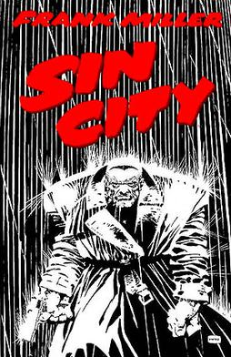
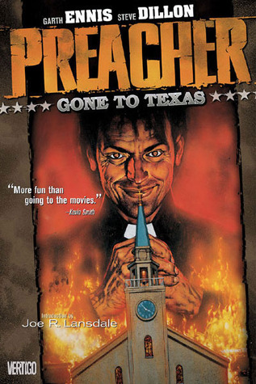
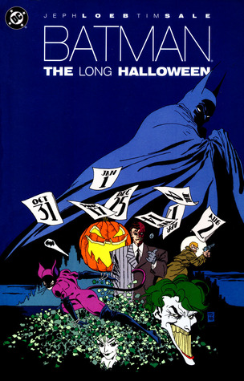
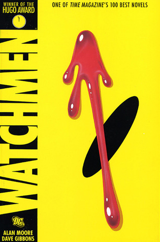

...Sin City
Sin City is a series of neo-noir comics by American comic book writer-artist Frank Miller. The first story originally appeared in Dark Horse Presents Fifth Anniversary Special (April 1991), and continued in Dark Horse Presents #51–62 from May 1991 to June 1992, under the title of Sin City, serialized in thirteen parts. Several other stories of variable lengths have followed. The intertwining stories, with frequently recurring characters, take place in Basin City.

...Preacher
One of the most celebrated comics titles of the late 1990s, PREACHER is a modern American epic of life, death, love and redemption also packed with sex, booze, blood and bullets - not to mention angels, demons, God, vampires and deviants of all stripes. At first glance, the Reverend Jesse Custer doesn't look like anyone special-just another small-town minister slowly losing his flock and his faith. But he's about to come face-to-face with proof that God does indeed exist. Merging with a bizarre spiritual force called Genesis, Jesse now possesses the power of "the Word," an ability to make people do whatever he utters. He begins a violent and riotous journey across the country in search of answers from the elusive deity.

...Batman: The Long Halloween
Taking place during Batman's early days of crime fighting, this new edition of the classic mystery tells the story of a mysterious killer who murders his prey only on holidays. Working with District Attorney Harvey Dent and Lieutenant James Gordon, Batman races against the clock as he tries to discover who Holiday is before he claims his next victim each month. A mystery that has the reader continually guessing the identity of the killer, this story also ties into the events that transform Harvey Dent into Batman's deadly enemy, Two-Face

...Kingdom Come
Writer Mark Waid, coming from his popular work on Flash and Impulse, and artist Alex Ross, who broke new ground with the beautifully painted Marvels, join together for this explosive book that takes place in a dark alternate future of the DC Superhero Universe. Batman, Superman, Wonder Woman, and almost every other character from DC Comics must choose sides in what could be the final battle of them all.

...Watchmen
This Hugo Award-winning graphic novel chronicles the fall from grace of a group of super-heroes plagued by all-too-human failings. Along the way, the concept of the super-hero is dissected as the heroes are stalked by an unknown assassin. One of the most influential graphic novels of all time and a perennial best-seller, Watchmen has been studied on college campuses across the nation and is considered a gateway title, leading readers to other graphic novels such as V for Vendetta, Batman: The Dark Knight Returns and The Sandman series